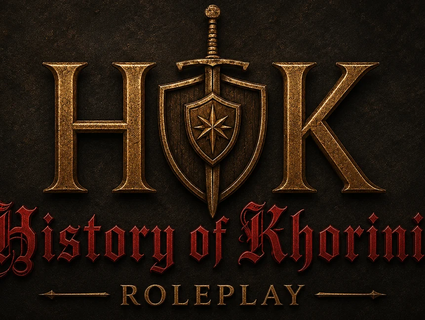

⇩
Installation
Alle Schritte vom frischen Gothic 2 DNDR bis zum GMP-Launcher.
Anleitung
Ein Hardcore-RP-Projekt in der Welt von Gothic 2. Khorinis, Nordmar und die Kolonie werden gemeinsam durch Spieler, Geschichten und Konsequenzen geformt.

History of Khorinis spielt in einer frühen Zeit, lange bevor Myrtana seine Macht entfaltet. Khorinis ist ungezähmt, gefährlich und voller unbekannter Orte. Eine Expedition aus Nordmar bricht auf, um die Insel zu erreichen und dort Fuß zu fassen.
Diese statische Website übernimmt den gelieferten Wiki-Inhalt, ordnet ihn als klassische Spiele-Homepage und macht Installation, Regeln, Leitfäden, Systeme und Lore schneller erreichbar.
Alle Schritte vom frischen Gothic 2 DNDR bis zum GMP-Launcher.
AnleitungServerregeln, Konflikt-RP, Gefangennahmen, Überfälle, Raids und OOC-Grenzen.
RegellisteGrundlagen für Charakter, /me-Spiel, Interaktion und Konflikt-RP.
LeitfadenBerufe, Lernpunkte, Attribute, Waffen, Schadenstypen und Logs.
Hilfen
Nordmarer brechen auf, um Khorinis zu erreichen und eine Zukunft aufzubauen.
Mehr erfahren
Überfahrt über kalte Gewässer, fremde Küsten und die Hoffnung, Khorinis lebend zu erreichen.
Mehr erfahren
 BerufeBerufsgruppen, Spezialisierungen und Erfahrung
BerufeBerufsgruppen, Spezialisierungen und Erfahrung RegelnVerbindliche Grundlage für faires RP
RegelnVerbindliche Grundlage für faires RP LogsPersönliches Spielarchiv und Supporthilfe
LogsPersönliches Spielarchiv und Supporthilfe GalerieProjektbilder, Stimmungen und Impressionen aus HoK RP
GalerieProjektbilder, Stimmungen und Impressionen aus HoK RP WikiVollständiger lokaler Inhaltsindex
WikiVollständiger lokaler Inhaltsindex